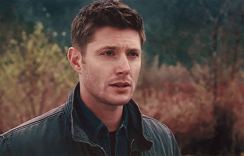

Дин и Сэм Винчестеры
Братья Дин и Сэм Винчестеры — главные герои американского телесериала «Сверхъестественное».
Дин Винчестер
Дин Винчестер — один из сильнейших в мире охотников на нечисть, принадлежащий к семьям Винчестеров и Кэмпбеллов.
Дин Винчестер родился 24 января 1979 года в семье Джона и Мэри Винчестер. Он был назван в честь своей бабушки по материнской линии — Дианы Кэмпбелл. Дин был первым ребёнком в семье, он старше своего родного брата Сэма на четыре года, а единокровного брата Адама — на 11 лет.
В отличие от Сэма, Дин очень глубок и естественен. За ним не стоят секреты от брата, желание изменить свою жизнь, он просто живёт как дано ему на этом свете.
Сэм Винчестер
Сэмюэль «Сэм» Уильям Винчестер — один из сильнейших в мире охотников на нечисть, принадлежащий к семьям Винчестеров и Кэмпбеллов.
Сэм Винчестер родился 2 мая 1983 года в семье Джона и Мэри Винчестеров. Сэм — второй ребёнок в семье, он младше своего брата Дина на 4 года и старше Адама на 7 лет. Назван в честь своего деда по матери Сэмюэля Кэмпбелла. Дин — единственный, кому позволено называть его «Сэмми». Кроули же, наоборот, называет его «лосярой» (вероятно из-за его причёски, крупной комплекции и отсутствия соответствующего чувства юмора).
По характеру Сэм, в значительной мере, пошел в отца, такая же целеустремленность и неуступчивость, и из за этого они часто ссорились. Также в Сэме не мало от деда по отцу, высокий интеллект и стремление выяснить все детали дела, над которым работает. За это Дин нередко называл младшего брата зубрилой и ботаном.
Главная страница